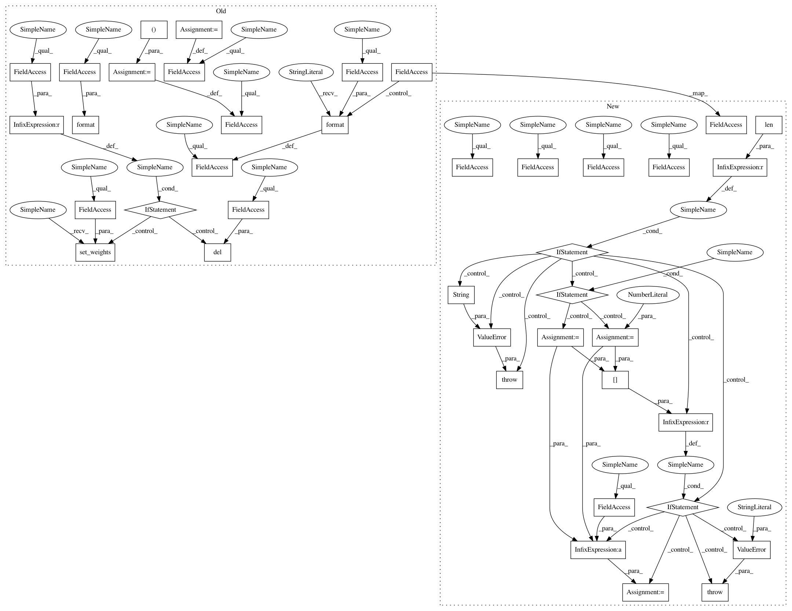

023331ec2a7b0086abfc81eca16c84a1692ee653,keras/layers/core.py,TimeDistributedDense,build,#TimeDistributedDense#Any#,1231
Before Change
super(TimeDistributedDense, self).__init__(**kwargs)
def build(self, input_shape):
self.input_spec = [InputSpec(dtype=K.floatx(),
shape=(None,) + input_shape[1:])]
input_dim = input_shape[2]
self.W = self.add_weight((input_dim, self.output_dim),
initializer=self.init,
name="{}_W".format(self.name),
regularizer=self.W_regularizer,
constraint=self.W_constraint)
if self.bias:
self.b = self.add_weight((self.output_dim,),
initializer="zero",
name="{}_b".format(self.name),
regularizer=self.b_regularizer,
constraint=self.b_constraint)
else:
self.b = None
if self.initial_weights is not None:
self.set_weights(self.initial_weights)
del self.initial_weights
self.built = True
def get_output_shape_for(self, input_shape):
return (input_shape[0], input_shape[1], self.output_dim)
After Change
This version performs the same function as Dropout, however it drops
entire 2D feature maps instead of individual elements. If adjacent pixels
within feature maps are strongly correlated (as is normally the case in
early convolution layers) then regular dropout will not regularize the
activations and will otherwise just result in an effective learning rate
decrease. In this case, SpatialDropout2D will help promote independence
between feature maps and should be used instead.
// Arguments
rate: float between 0 and 1. Fraction of the input units to drop.
data_format: "channels_first" or "channels_last".
In "channels_first" mode, the channels dimension
(the depth) is at index 1,
in "channels_last" mode is it at index 3.
It defaults to the `image_data_format` value found in your
Keras config file at `~/.keras/keras.json`.
If you never set it, then it will be "channels_last".
// Input shape
4D tensor with shape:
`(samples, channels, rows, cols)` if data_format="channels_first"
or 4D tensor with shape:
`(samples, rows, cols, channels)` if data_format="channels_last".
// Output shape
Same as input
// References
- [Efficient Object Localization Using Convolutional Networks](https://arxiv.org/abs/1411.4280)
def __init__(self, rate, data_format=None, **kwargs):
In pattern: SUPERPATTERN
Frequency: 3
Non-data size: 40
Instances
Project Name: keras-team/keras
Commit Name: 023331ec2a7b0086abfc81eca16c84a1692ee653
Time: 2017-02-09
Author: francois.chollet@gmail.com
File Name: keras/layers/core.py
Class Name: TimeDistributedDense
Method Name: build
Project Name: keras-team/keras
Commit Name: 023331ec2a7b0086abfc81eca16c84a1692ee653
Time: 2017-02-09
Author: francois.chollet@gmail.com
File Name: keras/layers/convolutional.py
Class Name: Convolution2D
Method Name: build
Project Name: keras-team/keras
Commit Name: 023331ec2a7b0086abfc81eca16c84a1692ee653
Time: 2017-02-09
Author: francois.chollet@gmail.com
File Name: keras/layers/convolutional.py
Class Name: Convolution1D
Method Name: build